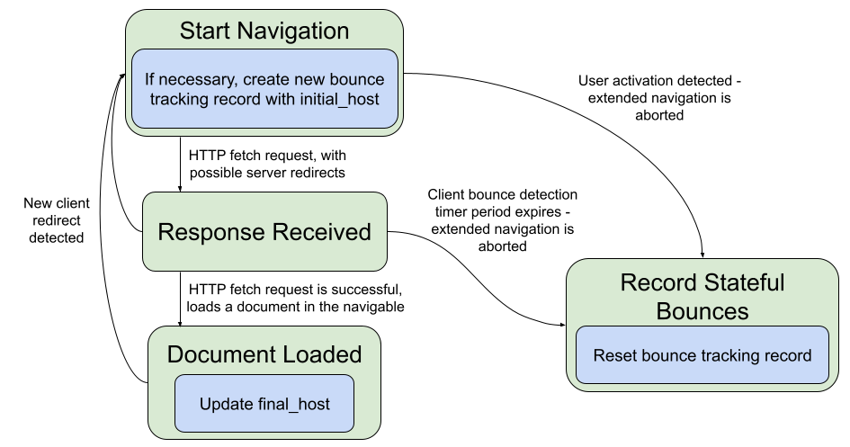

1. Introduction
This section is non-normative.
Browsers are working to prevent cross-site tracking, which threatens user privacy. In addition to third-party cookies and storage, other client-side methods exist that enable cross-site tracking. Navigational tracking correlates user identities across sites during navigations between those sites. Navigational tracking uses link decoration to convey information, but not all link decoration is tracking. This project attempts to distinguish tracking from non-tracking navigation and to prevent the tracking without damaging similar but benign navigations.
2. Infrastructure
This specification depends on the Infra standard. [INFRA]
3. Terminology
Link decoration is when the source of a hyperlink "decorates" its URL with extra information beyond what’s necessary to identify the page a user wants to navigate to. This information can be placed almost anywhere inside the URL.
Navigational tracking refers to the general use of one or more navigations to identify that a user on one site is the same person as a user on another site. Navigations transmit information cross-site in a few different ways, including in the target URL, which might be decorated, and in the timing of the request.
Examples and non-examples of link decoration and navigational tracking, with the potential decoration or tracking element emphasized:
https://publisher.example/page?userId=5789rhkdsaf8urfnsd-
Link decoration, and also navigational tracking.
https://bookshop.org/a/1122/9780062252074-
Link decoration but not navigational tracking: This number identifies an affiliate to credit with a book sale. Replacing this with another number gets to the same target page.
https://bookshop.org/a/1122/9780062252074-
Not decoration: This number identifies a particular book. Changing it yields a different target page.
https://bugzilla.mozilla.org/show_bug.cgi?id=1460058-
Not decoration: changing the number changes which bug the user sees.
https://www.google.com/maps/@37.4220328,-122.0847584,17.12z-
Changing the numbers changes what map the user sees, and embedding a user ID would not successfully transfer that user ID to the target site, but it’s hard for an automated system inside a browser to prove that, and even hard for humans reading the URL to be confident of it. [Issue #4]
https://publisher.example/unsubscribe?userId=5789rhkdsaf8urfnsd-
The URL identifies an action rather than a page, and the user ID might be essential for that action to happen. However, this is also clearly a user ID and sufficient to track a user if the source and target collaborate. [Issue #5]
https://example.com/auth/callback?token=1234567-
This is probably the same case as the unsubscribe link. [Issue #5]
https://example.com/login?returnto=item/12345-
Assuming a request for this URL shows a login page instead of immediately redirecting to
item/12345, this is a link decoration but not navigational tracking.
Bounce tracking refers to the use of redirects in a top-level context
(including HTTP 3xx statuses, meta elements with http-equiv=refresh attributes, and script-directed
navigation that doesn’t wait for user input) along with link decoration to
join user identities between sites. Bounce tracking is a subset of navigational tracking and can include automated navigation through the same
or different sites from the source or ultimate destination of a link.
Tracking via a bounce through an aggregation domain:
-
The content publisher’s page (on
publisher.example) embeds a third-party script fromtracker.example. -
The third-party script tries to read an already-stored identifier, for example one it has set into
publisher.example’s storage or one read from a third-partytracker.exampleiframe. -
If it can’t, it redirects the top level page to
tracker.exampleusingwindow.location. -
During this load
tracker.exampleis the first party and can read and write its cookie jar. -
tracker.exampleredirects back to the original page URL, with that URL decorated with its user ID in a query parameter. -
The
tracker.exampleuser ID is now available onpublisher.exampleand can be saved into its first-party storage so that future visits don’t need to bounce.
4. Threat model
This section will precisely define the goals and non-goals of this specification’s mitigations. It will define a few classes of actors with the ability to modify websites in particular ways. Then it will define what cross-site information each of these actors can or cannot learn.
4.1. Threat actors
TODO
5. Considered Alternatives
This section is non-normative.
So far, the alternative designs consist of mitigations that various browsers have already deployed.
5.1. Deployed Mitigations
Some browsers have deployed and announced protections against navigational tracking. This section is a work in progress to detail what protections have been shipped and / or are planned. This section is not comprehensive.
5.1.1. Safari
Safari uses an algorithmic approach to combat navigational tracking. Safari classifies a site as having cross-site tracking capabilities if the following criteria are met within a particular client:
-
The site appears as a third-party resource under enough different registrable domains.
-
The site automatically redirects the user to enough other sites, immediately or after a short delay.
-
The site redirects to sites that are classified as trackers, recursively.
For example, consider the case of a user clicking on a link on
start.example, which redirects tosecond.example, which redirects tothird.example, which redirects toend.example. If Safari has classifiedthird.exampleas having tracking capabilities, the above behavior can result in Safari classifyingsecond.exampleas having cross-site tracking capabilities.
If a user navigates or is redirected from a classified tracker with a URL that includes either query parameters or a URL fragment, the lifetime of client-side set cookies on the destination page is capped at 24 hours.
5.1.2. Firefox
Firefox uses a list-based approach to combat navigational tracking. Sites on the Disconnect list are considered tracking sites. All storage for tracking sites is cleared after 24 hours, unless the user has interacted with the site in the first-party context in the last 45 days.
Firefox is also starting to remove query parameters known to be used for cross-site tracking. ([FSN-2021-Q4]) The affected query parameters are chosen using the criteria on the Mozilla Anti Tracking Policy, which includes:
-
High-entropy parameters that might identify a user or encode user data, except:
-
Parameters exclusively identifying specific elements or actions on the navigating page (per-click or per-element identifiers), as long as those parameters assign a different value to each click or element they are identifying.
-
Identifiers necessary to complete a user-initiated task such as logging in or submitting a form.
-
-
High-entropy parameters that are broadly included in nearly all outgoing navigations from a site, even if the parameters don’t uniquely identify a user.
As of May 2022, this query-parameter stripping is applied by default in the Firefox Nightly build, and planned to be enabled in strict ETP mode and in private browsing.
5.1.3. Brave
Brave uses four list-based approaches to combat navigational tracking.First, Brave strips query parameters commonly used for navigational tracking from URLs on navigation. This list is maintained by Brave.
Second, by default, when i) the user is about to visit a list-identified
bounce-tracking URL, and ii) the current profile does not contain any cookies
or localStorage for that site, Brave will create a new, "ephemeral", empty storage
area for the site. This storage area persists as long as the user has
any top-level frames open for the site. As soon as the user has no
top-level frames for the labeled bounce-tracking site, the ephemeral storage
area is deleted.
Third, in the non-default, "aggressive blocking" configuration, Brave uses popular crowd-sourced filter lists (e.g., EasyList, EasyPrivacy, uBlock Origin) to identify URLs that are used for bounce tracking, and will preempt the navigation with an interstitial (similar to Google SafeBrowsing), giving the user the option to continue the navigation or cancel it.
Fourth, Brave uses a list-based approach for identifying bounce tracking
URLs where the destination URL is present in the URL of the intermediate
tracking URL. In such cases, Brave will skip the intermediate navigation
and request the destination URL instead. For example, if Brave
Browser observes the user about to navigate to the URL https://tracker.example/bounce?dest=https://destination.example/,
the browser might replace the navigation to tracker.example/bounce,
with a navigation to https://destination.example/. This list
is maintained by Brave, and is drawn from a mix of crowd-sourcing and
existing open-source projects.
6. Bounce Tracking Mitigations
The content of this section will provide a "monkey patch" specification for bounce tracking mitigations. There is a Chromium-oriented explainer for this work, but the text in this section is intended for adoption across all browsers. This section is not complete yet, and as the algorithms are developed, they will be specified here and presented for review.
This spec is written for the case where the following features are enabled:
-
All third-party cookies are blocked.
-
All cookies written by embedded third-party sites are partitioned.
-
All storage written by embedded third-party sites is partitioned.
The following is a work-in-progress and does not yet reflect any consensus in the PrivacyCG.
6.1. Data Model
6.1.1. Global Data
The user agent holds a user activation map which is a map of site hosts to moments. The moments represent the most recent wall clock time at which the user activated a top-level document on the associated site host.
The user agent holds a stateful bounce tracking map which is a map of site hosts to moments. The moments represent the first wall clock time since the last execution of the bounce tracking timer at which a page on the given site host performed an action that could indicate stateful bounce tracking took place. For example, if bounce tracking timer ran at time X and bounces occurred at times X-1, X+1, and X+2, then the map value would be X+1.
Note: Schemeless site is used as the data structure key because by default cookies
are sent to both http:// and https:// pages on the same domain.
Note: Hosts are eagerly removed from the stateful bounce tracking map when a user activation occurs. This means that a given host can exist in either the user activation map or stateful bounce tracking map, but not both at the same time. The maps will have non-overlapping sets of keys.
6.1.2. Per-Tab Data
An extended navigation is a contiguous sequence of navigations within a single top-level traversable, joined by client-side redirects, which the user agent expects its user to perceive as a single operation.
Each top-level traversable has an associated bounce tracking record which is a bounce tracking record or null. This stores the data relevant to bounce tracking enforcement for every extended navigation. It is non-null during an extended navigation and returns to null when the UA stops waiting for further client-side redirects that might extend the current extended navigation.
A bounce tracking record is a struct whose items are:
- initial host
- A site's host. The initiator site of the current extended navigation.
- final host
- A site's host or null. The destination of the current extended navigation. Updated after every document load.
- bounce set
- A set of sites' hosts. All server-side and client-side redirects hit during this extended navigation.
- storage access set
- A set of sites' hosts. All sites which accessed storage during this extended navigation.
- user activation set
- A set of sites' hosts. All sites which received a user activation during this extended navigation.
6.1.3. Constants
The bounce tracking grace period is an implementation-defined duration that represents the length of time after a possible bounce tracking event during which the user agent will wait for an interaction before deleting a site host's storage.
Note: 1 hour is a reasonable bounce tracking grace period value.
The bounce tracking activation lifetime is an implementation-defined duration that represents how long user activations will protect a site host from storage deletion.
Note: 45 days is a reasonable bounce tracking activation lifetime value.
The bounce tracking timer period is an implementation-defined duration that represents how often to run the bounce tracking timer algorithm.
Note: 1 hour is a reasonable bounce tracking timer period value.
The client bounce detection timer period is an implementation-defined duration that represents how long to wait for a client redirect after a navigation ends. The purpose is to catch all automated page-triggered redirects, which should be appended to the current extended navigation, with high probability.
Note: 10 seconds is a reasonable client bounce detection timer period value.
6.2. Algorithms
6.2.1. User Activation Monkey Patch
To record a user activation given a Document document, perform the following steps:
-
Let navigable be document’s node navigable.
-
If navigable is null, then abort these steps.
-
Let topDocument be navigable’s top-level traversable's active document.
-
Let origin be topDocument’s origin.
-
If origin is an opaque origin then abort these steps.
-
Let site be the result of running obtain a site given origin.
-
Let host be site’s host.
-
Remove host from the stateful bounce tracking map.
-
Set user activation map[host] to topDocument’s relevant settings object's current wall time.
-
If navigable’s bounce tracking record is not null:
-
Append host to navigable’s bounce tracking record's storage access set.
-
Append the following steps to the activation notification steps in the user activation processing model:
-
Run record a user activation given document.
6.2.2. Web Authentication Monkey Patch
A successful credential access, using the Web Authentication API, is also treated as a user activation for bounce-tracking purposes.
Add the following argument to PublicKeyCredential's [[DiscoverFromExternalSource]]() algorithm:
- browsingContext
- The caller’s environment’s target browsing context
Insert the following steps in the [[DiscoverFromExternalSource]]() algorithm
in step 17, under "If any authenticator indicates success":
-
Run process a Web Authentication assertion for bounce tracking mitigations given callerOrigin and browsingContext.
To process a Web Authentication assertion for bounce tracking mitigations given a browsing context browsingContext, perform the following steps:
-
If browsingContext is null, then abort these steps.
-
Let topDocument be browsingContext’s active document.
-
Let origin be topDocument’s origin.
-
If origin is an opaque origin then abort these steps.
-
Let site be the result of running obtain a site given origin.
-
Let host be site’s host.
-
Set user activation map[host] to topDocument’s relevant settings object's current wall time.
Note: It’s also reasonable to treat signin to a browser-integrated account as a user activation for bounce-tracking purposes. Such an interaction could be stored in the user activation map for the host of the identity provider and/or the host domain of the account.
6.2.3. Stateful Bounce Detection
6.2.3.1. Start Navigation Monkey Patch
At the start of a navigation, either initialize a new bounce tracking record, or append a client-side redirect to the current bounce tracking record.
Insert the following steps in the navigate algorithm before step 8, "Navigate to a fragment given navigable, url, historyHandling, and navigationId."
-
Run process navigation start for bounce tracking given navigable, sourceDocument, and sourceSnapshotParams.
To process navigation start for bounce tracking given a navigable navigable, Document sourceDocument, and source snapshot params sourceSnapshotParams, perform the following steps:
-
If navigable is not a top-level traversable, then abort these steps.
-
Remove any queued global tasks to record stateful bounces for bounce tracking from the networking task source.
-
Let origin be sourceDocument’s origin.
-
If origin is an opaque origin, set initialHost to empty host.
-
Otherwise,
-
Let site be the result of running obtain a site given origin.
-
Set initialHost to site’s host.
-
-
If navigable’s bounce tracking record is null:
-
Set navigable’s bounce tracking record to a new bounce tracking record with initial host set to initialHost.
-
Note: This includes the case where the current navigation was initiated by another navigable, e.g. when opening a link in a new tab. In this case, sourceDocument is set to the opener Document, and the new bounce tracking record has its initial host set to the opener host. This ensures that trackers opened in new tabs are detected as distinct from the initial host in the new bounce tracking record.
-
Otherwise,
-
If sourceSnapshotParams’s has transient activation is true:
-
Run record stateful bounces for bounce tracking given navigable’s active document's relevant global object.
-
Set navigable’s bounce tracking record to a new bounce tracking record with initial host set to initialHost.
-
Append initialHost to navigable’s bounce tracking record's user activation set.
-
-
Otherwise, add initialHost to navigable’s bounce tracking record's bounce set.
-
6.2.3.2. Network Cookie Write Monkey Patch
Each top-level traversable maintains a record of which sites it has saved cookies for in the current extended navigation.
Insert the following steps in the HTTP-network fetch algorithm after step 15, "... run the "set-cookie-string" parsing algorithm (see section 5.2 of [COOKIES]) ...":
-
If cookies were stored in the cookie store in the previous step, then run process a fetch storage access for bounce tracking mitigations given request.
Note: If the Set-Cookie header includes any cookies that the user agent ignores, for example because it’s blocking third-party cookies,
they’re not considered "stored in the cookie store" in this algorithm.
To process a fetch storage access for bounce tracking mitigations given a request request, perform the following steps:
-
Let origin be request’s origin.
-
If origin is an opaque origin, then abort these steps.
-
If request is a subresource request, then:
-
If request’s client is null, or request’s client's target browsing context is null, then abort these steps.
-
Let topLevelTraversable be request’s client's target browsing context's top-level traversable.
-
-
Otherwise,
-
If request’s reserved client is null, or request’s reserved client's target browsing context is null, then abort these steps.
-
Let topLevelTraversable be request’s reserved client's target browsing context's top-level traversable.
-
-
If topLevelTraversable’s bounce tracking record is null, abort these steps.
-
Let site be the result of running obtain a site given origin.
-
Append site’s host to topLevelTraversable’s bounce tracking record's storage access set.
Note: We currently don’t treat cookie reads as stateful, but this would be a
reasonable future change. We could run process a fetch storage access for bounce tracking mitigations in the HTTP-network-or-cache fetch algorithm after step 8.21.1.2,
"... append (Cookie, cookies) to httpRequest’s header list. ..."
6.2.3.3. Service Worker Activation Monkey Patch
Each top-level traversable maintains a record of which sites have activated service workers in the current extended navigation.
Insert the following steps in the Handle Fetch algorithm after step 23, "If the result of running the Run Service Worker algorithm...":
-
Run process a fetch storage access for bounce tracking mitigations given request.
6.2.3.4. Storage Access Monkey Patch
Each top-level traversable maintains a record of which sites have accessed storage in the current extended navigation.
Insert the following steps in the obtain a storage bottle map algorithm before step 10, "Return proxyMap":
-
Run process a general storage access for bounce tracking mitigations given environment.
This patch has to be run whenever a site accesses non-cookie storage. Obtain a storage bottle map is the intended hook for this, but it does not currently have full coverage across specs that use storage. So this patch is not comprehensive. [Issue #whatwg/storage#165]
To process a general storage access for bounce tracking mitigations given an environment environment, perform the following steps:
-
If environment is not an environment settings object, then abort these steps.
Note: At time of writing, obtain a storage bottle map can only accept an environment settings object environment, but this will be refactored to support service workers which attempt to access storage on every navigation, and thus is not considered when updating the storage access set.
-
Let origin be environment’s top-level origin.
-
If origin is null or an opaque origin, then abort these steps.
-
Let global be environment’s realm execution context's global object.
-
Let navigables be an empty set of navigables.
-
If global is a Window object, append global’s associated document's node navigable onto navigables.
-
Otherwise, if global is a
WorkerGlobalScopeobject,-
Let ownerQueue be an empty queue of document or
WorkerGlobalScopeobjects. -
Enqueue global onto ownerQueue.
-
While ownerQueue is not empty,
-
Dequeue owner from ownerQueue.
-
If owner is a document object, append owner’s node navigable onto navigables.
-
If owner is a
WorkerGlobalScopeobject, then For each owner in global’s owner set, enqueue owner onto ownerQueue.
-
-
Note: Handling WorkerGlobalScope covers all storage access from a dedicated worker (DedicatedWorkerGlobalScope) or a shared worker
(SharedWorkerGlobalScope). This doesn’t apply to service workers, which rely on process a fetch storage access for bounce tracking mitigations during Fetch events and process a general storage access for bounce tracking mitigations with a Window object when a service worker is
accessed using navigator.serviceWorker.getRegistration().
-
For each navigable in navigables:
-
If navigable is not a top-level traversable, then abort these steps.
-
If navigable’s bounce tracking record is null, then abort these steps.
-
Let site be the result of running obtain a site given origin.
-
Append site’s host to navigable’s bounce tracking record's storage access set.
-
6.2.3.5. Response Received Monkey Patch
When the response is received at the end of a navigation, fill the bounce set.
Insert the following steps in the create navigation params by fetching algorithm, after Step 19.7, "Wait until either response is non-null...", which is the point that url list becomes available.
-
Run process response received for bounce tracking given navigable and response’s URL list.
To process response received for bounce tracking given a navigable navigable and a list of URLs URLs, perform the following steps:
-
If navigable is not a top-level traversable, then abort these steps.
-
Assert: navigable’s bounce tracking record is not null.
-
Let global be navigable’s active document's relevant global object.
-
Run steps after a timeout given:
- global
- global
- milliseconds
- client bounce detection timer period
- completionSteps
- queue a global task on the networking task source with global to record stateful bounces for bounce tracking given global
-
For each URL in URLs:
-
Let site be the result of running obtain a site given URL.
-
Let host be the site’s host.
-
Insert host to the navigable’s bounce tracking record's bounce set.
-
6.2.3.6. Document Loaded Monkey Patch
When the document is loaded at the end of a navigation, update the final host.
Note: The final host is updated later than process response received for bounce tracking to ensure that the final host is a valid user destination. This is the one that has to be compared against when deciding to exempt a host in the record stateful bounces for bounce tracking algorithm.
Insert the following steps in the load a document algorithm, before Step 5, "Return null", which is the point that the document is loaded.
-
Run process document load for bounce tracking given navigable and response’s URL list.
To process document load for bounce tracking given a navigable navigable and a list of URLs URLs, perform the following steps:
-
If navigable is not a top-level traversable, then abort these steps.
-
Assert: navigable’s bounce tracking record is not null.
-
If URLs is empty, then abort these steps.
-
Let finalSite be the result of running obtain a site given the last entry in URLs.
-
Set the navigable’s bounce tracking record's final host to the host of finalSite.
6.2.3.7. Navigation State Diagram

6.2.4. Timers
Every bounce tracking timer period the user agent should run the bounce tracking timer algorithm given the wall clock's unsafe current time.
Note: Running the deletion algorithm on a global timer has the effect of adding fuzz to the delay between stateful bounce and data deletion. This mitigates adversarial leaks of interaction and bounce times. (See "Privacy and Security Considerations", below.)
To run the bounce tracking timer algorithm given a moment on the wall clock now, perform the following steps:
-
For each host -> activationTime of user activation map:
-
Assert that stateful bounce tracking map does not contain host.
-
If activationTime + bounce tracking activation lifetime is before now, then remove host from user activation map.
-
-
For each host -> bounceTime of stateful bounce tracking map:
-
Assert that user activation map does not contain host.
-
If bounceTime + bounce tracking grace period is after now, then continue.
-
If there is a top-level traversable whose active document's origin's site's host equals host, then continue.
-
Remove host from stateful bounce tracking map.
-
Clear cookies for host given host.
-
Clear non-cookie storage for host given host.
-
Clear cache for host given host.
-
TODO: Consider if we should do anything when the clock is moved forward or backward.
This algorithm is called when detecting the end of an extended navigation. This could happen if:
-
a user-initiated navigation is detected in process navigation start for bounce tracking;
-
the client bounce detection timer expires after process response received for bounce tracking without observing a client redirect; or,
-
the associated top-level traversable's is closing is set to true.
To run the record stateful bounces for bounce tracking algorithm given a global object global, perform the following steps:
-
Let navigable be global’s associated document's node navigable.
-
If navigable is null, abort these steps. This ensures that the global has not been detached from the navigable.
-
Let topDocument be navigable’s active document.
-
Assert: topDocument is the same as global’s associated document.
-
Assert: navigable’s bounce tracking record is not null.
-
For each host in navigable’s bounce tracking record's bounce set:
-
If host equals navigable’s bounce tracking record's initial host, continue.
-
If host equals navigable’s bounce tracking record's final host, continue.
-
If user activation map contains host, continue.
-
If stateful bounce tracking map contains host, continue. (Only the first bounce time since the last execution of the bounce tracking timer is tracked in the map.)
-
If navigable’s bounce tracking record's storage access set does not contain host, continue.
-
Let topDocument be navigable’s active document.
-
Set stateful bounce tracking map[host] to topDocument’s relevant settings object's current wall time.
-
-
Set navigable’s bounce tracking record to null.
6.2.5. Deletion
The cookie and cache clearing algorithms were largely copied from the Clear Site Data spec. It would be nice to unify these in the future.
To clear cookies for host given a host host, perform the following steps:
-
Assert: host’s registrable domain is host or null.
-
Let cookieList be a set of cookies, initially empty.
-
For each cookie cookie in the cookie store:
-
If cookie is not partitioned:
-
If cookie’s domain attribute is a domain-match with host, add cookie to cookieList; otherwise, continue.
-
-
If cookie is partitioned:
-
If the top-level site in cookie’s partition key is same site with the site ("http", host), add cookie to cookieList.
-
If the top-level site in cookie’s partition key is same site with the site ("https", host), add cookie to cookieList.
-
Otherwise, continue.
-
-
-
For each cookie in cookieList:
-
Remove cookie from the cookie store.
-
TODO: Verify that using domain-match catches all cookies for the registrable domain.
-
For each storage shed shed held by the user agent or a traversable navigable:
Note: This algorithm is written assuming the implementation of the work-in-progress update to the Storage Standard to key storage on both an origin and a top-level site.
-
Let cacheList be the set of entries from the network cache whose target URI host equals host.
-
For each entry in cacheList:
-
Remove entry from the network cache.
-
6.3. User Agent Automation
For the purposes of user-agent automation and application testing, this document defines a number of [extension commands] for the [WebDriver] specification.
6.3.1. Run Bounce Tracking Mitigations
| HTTP Method | URI Template |
|---|---|
| DELETE | /session/{session id}/storage/run_bounce_tracking_mitigations
|
The remote end steps are:
-
If no Bounce Tracking Mitigation Service is currently running, return a WebDriver error with error code unsupported operation.
-
If the stateful bounce tracking map contains a malformed host, return a WebDriver error with error code unknown error.
-
Let list be a new list of the site hosts in the stateful bounce tracking map.
-
Let temp be bounce tracking grace period.
-
Set bounce tracking grace period to 0 seconds.
-
Run the bounce tracking timer algorithm.
-
Set bounce tracking grace period to temp.
-
Return success with data list.
7. Privacy and Security Considerations
This feature stores information about sites that have a user interaction, some amount of view time, or engagement. This information is
not directly exposed to sites, however, it can be indirectly observed. For example, if tracker.example reports back its oldest existing state to site1.example, then site1.example could infer that tracker.example has had an interaction. If it does not report any long-lived state, however, then site1.example could infer that the state was wiped.
In addition, there are potential scenarios where the existence of an interaction could be accessed through existing XS leaks in the platform. Consider a scenario where a target site has an existing endpoint that causes an automatic redirect that triggers the bounce tracking mitigations. An attacker could use existing XS leaks to determine if any logged-in state is present on a target site and then look to see if that state disappears after triggering the bounce.
The information leak from tracker to site does not seem very significant. At a minimum, the proposed mitigations do not make the situation worse and without the mitigations there is a greater potential for a tracker to communicate state to the target site.
The cross-site adversarial information leak is more concerning. Solutions designed for this effort should take this threat into account and attempt to mitigate it. For example, delaying or fuzzing the timing of storage wiping could lessen the impact of the leak. Ultimately, though, it may be necessary to weigh the cost of this 1 bit information leak against the gains in mitigating bounce tracking.
Another threat that should be considered by any solution is the possibility that an attacker will trick a user into visiting an existing redirect endpoint on a site that they care about and somehow trigger their storage to be deleted. The current plan, however, is to already look at signals that a user cares about a site for legitimate use cases, in order to avoid wiping data they care about. This threat just puts more weight on getting these signals correct.
Otherwise this effort does not store or expose any new types of information. It does not create any new cross-origin communication or storage capabilities.
There is some implementation complexity to be aware of when wiping storage. The browser must be careful not to wipe storage out from under a site actively using it. This could lead to poor interop and broken web sites.
Acknowledgements
Many thanks to the Privacy Community Group for many good discussions about this proposal.